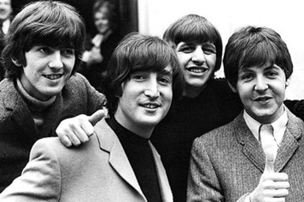
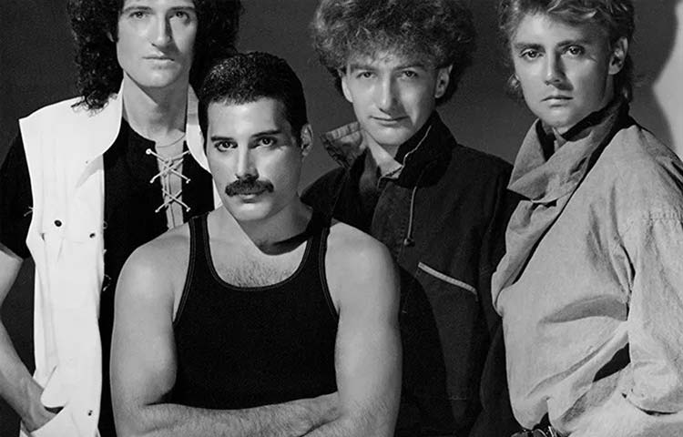

Em qual época você prefere e curte mais as musicas?
Melhores musicas dos anos 60,70,80 e 90 - The Beatles

The Beatles - foi uma banda de rock britânica, formada em Liverpool em 1960. É o grupo musical que mais vendeu na história da música. Segundo a EMI, em estimativa de 2001, mais de um bilhão de discos.
Melhores musicas dos anos 60,70,80 e 90 - Elvis Presley
Elvis Presley foi um cantor norte-americano, considerado o maior ídolo do rock'n roll mundial. Foi chamado o Rei do Rock. Entre suas músicas destacam-se: That's All Rigt, Love Me Tender, It's Now or Never e Kiss Me Quick.
Melhores musicas dos anos 60,70,80 e 90 - Jackson 5
The Jackson 5 foi um grupo musical de R&B e Soul dos Estados Unidos, surgido em 1964. O grupo era formado pelo cantor Michael Jackson e seus irmãos Jackie, Tito, Jermaine, Marlon e Randy. Ao longo dos anos em que o grupo permaneceu junto, venderam cerca de 113 milhões de álbuns. O grupo já teve 7 formações.
Melhores musicas dos anos 60,70,80 e 90 - Bee Gees
Bee Gees foi uma banda formada pelos irmãos Barry, Robin e Maurice Gibb. Nascidos na Ilha de Man, viveram alguns anos em Chorlton, Manchester, Inglaterra. Ainda crianças, mudaram-se com os pais para Brisbane, em Queensland, na Austrália. Fizeram sucesso desde 1966 até o início da década de 2010, estando entre os maiores vendedores de discos de todos os tempos.
Melhores musicas dos anos 60,70,80 e 90 - Queen
Queen foi uma banda britânica de rock, fundada em 1970 e ativa, sob sua formação clássica, até 1991. O grupo, formado por Brian May (guitarra e vocais), Freddie Mercury (vocais e piano), John Deacon (baixo) e Roger Taylor (bateria e vocais) é frequentemente citado como um dos expoentes do seu estilo, também sendo um dos recordistas de vendas de discos a nível mundial. A música da banda também é conhecida por ser altamente eclética, variando entre várias vertentes do rock.
Melhores musicas dos anos 60,70,80 e 90 - Guns n Roses
Guns N' Roses é uma banda americana de hard rock formada em Los Angeles, Califórnia, em 1985. A banda já lançou seis álbuns de estúdio, três EPs e um álbum ao vivo. Formada em 1985, a banda é atualmente composta pelo vocalista Axl Rose, o tecladista e backing vocal Dizzy Reed, os guitarristas Slash e Richard Fortus, o baixista e backing vocal Duff McKagan e o baterista Frank Ferrer.
Melhores musicas dos anos 60,70,80 e 90 - Foo Fighters

Foo Fighters, é uma banda de rock dos Estados Unidos formada pelos ex-Nirvana Dave Grohl e Pat Smear em 1994. Seu nome é uma referência ao termo "foo fighter", usado por aviadores na Segunda Guerra Mundial para descrever fenômenos aéreos misteriosos, considerados OVNIs. A banda atingiu sucesso internacional, lançando vários hits incluindo "This Is a Call", "Everlong", "Learn to Fly", "All My Life", "Times Like These", "Best of You","My Hero" e "The Pretender". Quatro de seus álbuns, There Is Nothing Left to Lose, One by One, Echoes, Silence, Patience & Grace e Wasting Light ganharam o Grammy por "melhor álbum de rock".


{kind=link}
{kind=link}
{kind=link}
{kind=link}
{kind=link}
{kind=link}